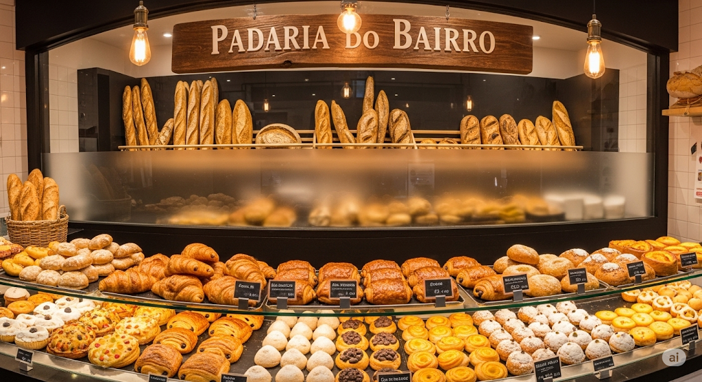

Sobre Nós
Fundada em 1985, a Padaria do Bairro nasceu do sonho de uma família apaixonada pela arte da panificação. Durante quase quatro décadas, temos servido nossa comunidade com produtos frescos, feitos diariamente com ingredientes selecionados e muito carinho.
Nossa história começou com uma pequena fornada de pães franceses que conquistou o coração dos vizinhos. Hoje, somos referência no bairro, mantendo as tradições familiares enquanto inovamos para atender os gostos modernos de nossos clientes.
Cada produto que sai do nosso forno carrega décadas de experiência e a dedicação de uma equipe que acredita que alimentar bem é uma forma de demonstrar cuidado e afeto pela comunidade.
Venha nos visitar e descubra o sabor da tradição!
Nossos Produtos
Oferecemos uma variedade de produtos artesanais, desde os clássicos pães do dia a dia até especialidades que fazem a diferença em ocasiões especiais. Todos os nossos produtos são preparados diariamente, garantindo frescor e qualidade incomparáveis.
Produtos em Destaque
- Pão francês - crocante por fora, macio por dentro
- Pão de açúcar - doce tradicional que derrete na boca
- Croissant - folhado artesanal com recheios variados
- Bolo de chocolate - receita especial da família
- Torta de frango - salgado cremoso e saboroso
- Pão integral - opção saudável com grãos selecionados
- Sonho - doce tradicional com creme fresquinho
- Empada de camarão - especialidade da casa
Além dos produtos tradicionais, também oferecemos encomendas especiais para festas, eventos corporativos e celebrações familiares. Consulte-nos sobre bolos personalizados e salgados para eventos.
Galeria de Produtos
Conheça a nossa padaria e confira algumas das delícias que preparamos com tanto carinho para você:


📋 Cardápio de Produtos
| Categoria | Produto | Descrição | Preço |
|---|---|---|---|
| Pães | Pão Francês | Pãozinho crocante, assado no forno a lenha | R$ 0,80 |
| Pães | Pão de Açúcar | Pão doce tradicional com açúcar cristal | R$ 1,20 |
| Pães | Croissant | Massa folhada artesanal, crocante por fora | R$ 3,50 |
| Pães | Pão Integral | Com grãos e sementes, rico em fibras | R$ 8,90 |
| Doces | Bolo de Chocolate | Massa fofinha com cobertura de chocolate | R$ 25,90 |
| Doces | Torta de Morango | Base crocante com creme e morangos frescos | R$ 32,90 |
| Doces | Brigadeiro Gourmet | Feito com chocolate belga premium | R$ 3,90 |
| Doces | Pudim de Leite | Receita da vovó com calda caramelizada | R$ 18,90 |
| Salgados | Coxinha | Frango desfiado temperado, massa sequinha | R$ 4,50 |
| Salgados | Pastel de Queijo | Massa crocante recheada com queijo derretido | R$ 5,90 |
| Salgados | Esfirra de Carne | Massa árabe com recheio de carne temperada | R$ 6,50 |
| Bebidas | Café Expresso | Grãos selecionados, torra especial | R$ 3,50 |
Nossos Diferenciais
O que nos torna únicos no bairro vai muito além dos nossos produtos. É o conjunto de valores e práticas que cultivamos ao longo de quase 40 anos de tradição:
- Ingredientes frescos diários - selecionamos fornecedores locais de confiança
- Receitas tradicionais - guardamos segredos de família passados por gerações
- Atendimento personalizado - conhecemos nossos clientes pelo nome
- Produtos artesanais - tudo feito à mão com técnicas tradicionais
- Compromisso com a qualidade - nunca vendemos produtos do dia anterior
- Preços justos - qualidade premium com valores acessíveis
- Tradição familiar - três gerações dedicadas à panificação
Localização e Horários
Estamos localizados no coração do bairro, na Rua das Flores, 123. Nossa localização privilegiada permite fácil acesso tanto a pé quanto de carro, com estacionamento disponível na frente da loja.
Horários de Funcionamento
Para melhor atendê-los, funcionamos em horários ampliados durante a semana:
- Segunda a Sexta: 6h às 19h
- Sábado: 6h às 18h
- Domingo: 7h às 12h
- Feriados: consultar funcionamento especial
Durante os horários de pico (7h às 9h e 17h às 19h), recomendamos paciência, pois priorizamos a qualidade do atendimento. Para encomendas especiais, sugerimos fazer o pedido com antecedência mínima de 24 horas.
Como Chegar
Localizada na Rua das Flores, 123, próximo à praça central do bairro. Ponto de referência: em frente ao banco e ao lado da farmácia. Transporte público: linhas 15, 23 e 47 param a duas quadras da padaria.